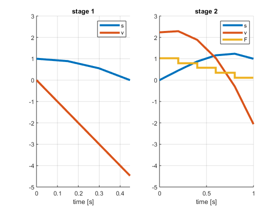

function [sol,times,solver] = bouncingball
before_contact = ocl.Phase([], @before_contact_vars, @before_contact_ode, 'N', 3, 'd', 2);
after_contact = ocl.Phase(1, @after_contact_vars, @after_contact_ode, ...
@after_contact_cost, 'N', 5, 'd', 2);
before_contact.setInitialStateBounds('s', 1);
before_contact.setInitialStateBounds('v', 0);
before_contact.setEndStateBounds('s', 0);
after_contact.setEndStateBounds('s', 1);
solver = OclSolver({before_contact, after_contact}, {@phase_transition});
[sol,times] = solver.solve(solver.getInitialGuess());
figure
spy(full(solver.jacobian_pattern(sol)))
figure;
subplot(1,2,1)
hold on; grid on;
oclPlot(times{1}.states, sol{1}.states.s)
oclPlot(times{1}.states, sol{1}.states.v)
legend({'s','v'})
xlabel('time [s]');
ylim([-5 3])
yticks(-5:3)
title('phase 1')
subplot(1,2,2)
hold on; grid on;
oclPlot(times{2}.states, sol{2}.states.s)
oclPlot(times{2}.states, sol{2}.states.v)
oclStairs(times{2}.states, [sol{2}.controls.F;sol{2}.controls.F(end)])
legend({'s','v','F'})
xlabel('time [s]');
ylim([-5 3])
yticks(-5:3)
title('phase 2')
end
function before_contact_vars(sh)
sh.addState('s');
sh.addState('v');
end
function before_contact_ode(sh,x,~,~,~)
sh.setODE('s', x.v);
sh.setODE('v', -10);
end
function after_contact_vars(sh)
sh.addState('s');
sh.addState('v');
sh.addControl('F');
end
function after_contact_ode(sh,x,~,u,~)
sh.setODE('s', x.v);
sh.setODE('v', -10 + 10*u.F);
end
function after_contact_cost(ch,~,~,u,~)
ch.add( u.F^2 );
end
function phase_transition(ch, x0, xF)
ch.add(x0.s, '==', xF.s);
ch.add(x0.v, '==', -xF.v/2);
end
This is Ipopt version 3.12.3, running with linear solver mumps.
NOTE: Other linear solvers might be more efficient (see Ipopt documentation).
Number of nonzeros in equality constraint Jacobian...: 167
Number of nonzeros in inequality constraint Jacobian.: 0
Number of nonzeros in Lagrangian Hessian.............: 11
Total number of variables............................: 56
variables with only lower bounds: 3
variables with lower and upper bounds: 0
variables with only upper bounds: 0
Total number of equality constraints.................: 52
Total number of inequality constraints...............: 0
inequality constraints with only lower bounds: 0
inequality constraints with lower and upper bounds: 0
inequality constraints with only upper bounds: 0
iter objective inf_pr inf_du lg(mu) ||d|| lg(rg) alpha_du alpha_pr ls
0 0.0000000e+000 3.33e+000 5.55e-016 -1.0 0.00e+000 - 0.00e+000 0.00e+000 0
1 7.5757955e-001 5.33e-001 7.39e-001 -1.0 2.00e+000 - 1.00e+000 1.00e+000h 1
2 2.7272864e-001 5.33e-001 1.01e+001 -1.7 4.00e+000 - 3.59e-001 1.00e+000h 1
3 4.0740944e-001 5.93e-002 1.78e+000 -1.7 1.33e+000 - 1.00e+000 1.00e+000h 1
4 4.2884843e-001 1.21e-003 7.34e-002 -1.7 1.90e-001 - 1.00e+000 1.00e+000h 1
5 4.2931055e-001 5.47e-007 1.85e-005 -2.5 4.05e-003 - 1.00e+000 1.00e+000h 1
6 4.2931076e-001 1.12e-013 4.73e-009 -3.8 1.84e-006 - 1.00e+000 1.00e+000h 1
7 4.2931076e-001 1.60e-015 1.84e-011 -5.7 3.77e-013 - 1.00e+000 1.00e+000h 1
8 4.2931076e-001 1.11e-015 2.52e-014 -8.6 9.12e-016 - 1.00e+000 1.00e+000 0
Number of Iterations....: 8
(scaled) (unscaled)
Objective...............: 4.2931076078557240e-001 4.2931076078557240e-001
Dual infeasibility......: 2.5183551600961758e-014 2.5183551600961758e-014
Constraint violation....: 1.1102230246251565e-015 1.1102230246251565e-015
Complementarity.........: 2.5059035596804191e-009 2.5059035596804191e-009
Overall NLP error.......: 2.5059035596804191e-009 2.5059035596804191e-009
Number of objective function evaluations = 9
Number of objective gradient evaluations = 9
Number of equality constraint evaluations = 9
Number of inequality constraint evaluations = 0
Number of equality constraint Jacobian evaluations = 9
Number of inequality constraint Jacobian evaluations = 0
Number of Lagrangian Hessian evaluations = 8
Total CPU secs in IPOPT (w/o function evaluations) = 0.009
Total CPU secs in NLP function evaluations = 0.001
EXIT: Optimal Solution Found.
t_proc [s] t_wall [s] n_eval
my_solver 0.01 0.00999 1
nlp_f 0 0 9
nlp_g 0.001 0.000999 9
nlp_grad_f 0 0 10
nlp_hess_l 0 0 8
nlp_jac_g 0 0 10
ans =
OclAssignment with content:
{
Variable:
Size: [23 1]
Type: OclStructure
Children: states, integrator, controls, parameters, h
Value: [1;0;0.987654;-0.496904;0.888889;-1.49071;0.149071;0.888889;-1.49071;0.802469;-1.98762;0.555556;-2.98142;0.149071;0.555556;-2.98142;0.395062;-3.47833;0;-4.47214;0.149071;0;-4.47214]
Variable:
Size: [42 1]
Type: OclStructure
Children: states, integrator, controls, parameters, h
Value: [0;2.23607;0.149661;2.25375;0.452519;2.28912;1.02653;0.2;0.452519;2.28912;0.600647;2.15473;0.870025;1.88594;0.79841;0.2;0.870025;1.88594;0.986206;1.59947;1.16127;1.02653;0.570293;0.2;1.16127;1.02653;1...
}
